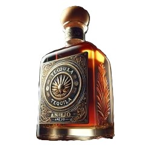
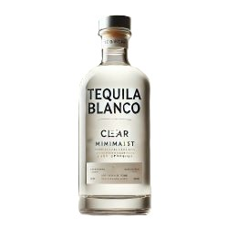
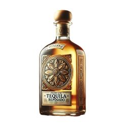

Nuestra Variedad de Tequilas
-
Añejo

Nuestro Tequila Añejo, envejecido más de 3 años en barricas de roble, ofrece un sabor suave, profundo y complejo, perfecto para momentos especiales.
$1,200 MXN
-
Blanco

Tequila blanco de alta pureza, destilado con precisión. Ideal tanto para cócteles como para degustar solo, capturando la esencia del agave.
$800 MXN
-
Reposado

El Tequila Reposado de Livergood Ltd, envejecido en barricas por 6 meses, combina un equilibrio perfecto entre suavidad, sabor y calidad.
$950 MXN